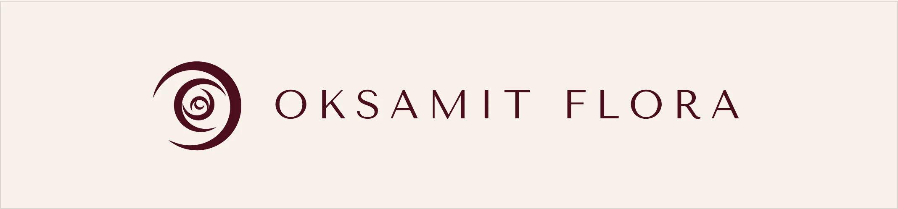
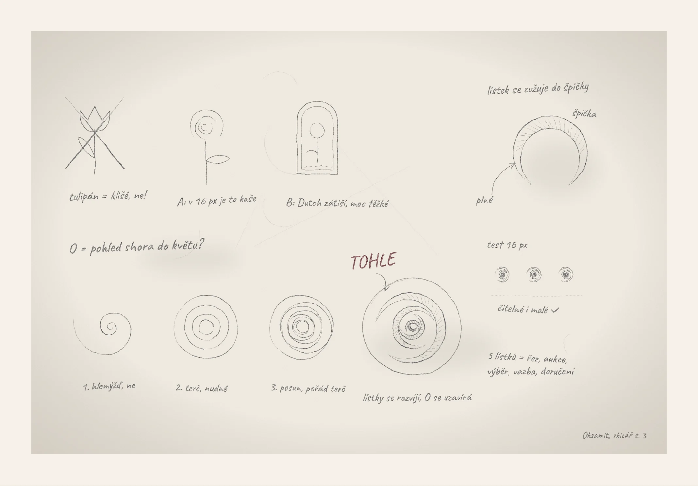
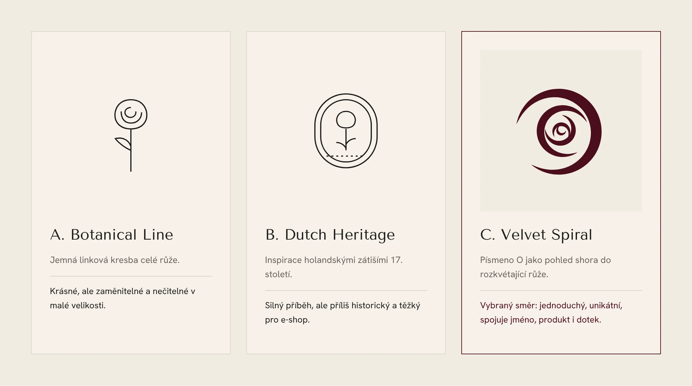
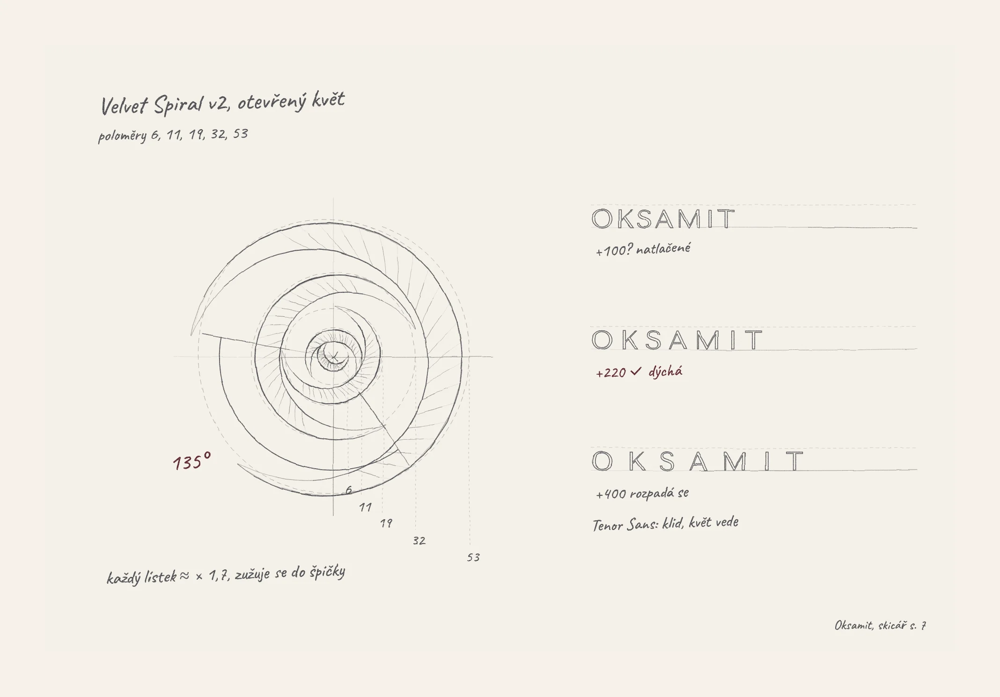

Logo and brand identity · Premium flower e-shop
A logo that opens like a rose
Logo and visual identity for Oksamit Flora, a premium online shop for cut flowers, mostly roses, shipped straight from Holland. The brand had to feel exclusive and timeless, and to show freshness and origin without shouting about them. The identity is finished, and the e-shop is being built now.

The challenge
Online, all flowers look the same
The brand had to communicate price, quality and origin without shouting about any of them.
Easy to mistake
The logo could not look like just another flower shop online.
Trust from a distance
Customers never see the bouquet before it arrives. Freshness has to be proven, not promised.
Timeless
The brand should last ten years without a redesign, so no trendy effects.
Holland without clichés
Origin without tulips, windmills or clogs.
An unfamiliar name
“Oksamit” (Ukrainian for velvet) had to become an advantage, not a barrier.
Research
Everyone sells luxury. Few prove it.
Premium players talk about luxury, but few of them prove freshness and origin. That gap is where we positioned Oksamit Flora.
| Category | Typical look | The weakness we use |
|---|---|---|
| Mass market | Bright pink, script fonts, discounts | Feels cheap, no story of origin |
| Boutique florists | Instagram aesthetic, handwritten type | Inconsistent, depends on the photos |
| International luxury brands | Black and gold, monogram | Cold, impersonal, no emotion |
Who we designed for
35–55
The elegant gift-giver
Sends flowers to a partner, parents or clients. Wants to be sure the gift will be perfect, without spending long choosing it.
30–50
The woman with a beautiful home
Buys flowers for herself, as a ritual. Cares about varieties, colours and how long they last.
Receptions, hotels, boutiques
The business client
Needs regular deliveries and flowers that represent the business well.
What we learned
Luxury you can touch
Velvet, linen, embossed paper and wax feel more premium than any visual effect.
Facts build trust
The rose variety, the stem length and the cutting date convince more than superlatives.
Daylight, not a studio
Natural light and texture looked more expensive than a packshot on white.
Brand strategy
A botanical atelier with the calm of luxury craft
Oksamit Flora delivers Dutch roses at their purest. Four principles guide every decision, from the logo to the delivery box.
Freshness as proof
Every bouquet carries its variety, origin and date.
Quiet, not loud
No discounts, no exclamation marks. Space and air instead.
Craft
Every bouquet is a small botanical work.
Touch
A brand you can almost feel, even on a screen.
| We are | We are not |
|---|---|
| Calm and confident | Superior and cold |
| Poetic, but specific | Over-sweet |
| Personal | Over-familiar |
| A typical flower shop says | Oksamit Flora says |
|---|---|
| “Red Naomi roses, cut on Tuesday morning in Aalsmeer. With you on Thursday.” |
Oksamit is Ukrainian for velvet: like a rose petal you touch for the first time. The unfamiliar word became the brand’s conversation starter.
Sketches
Looking for the shape on paper
A tulip was the first idea, and the first to go: a cliché. A full rose turned to mush at 16 pixels. A Dutch still life in a frame told a good story but felt too heavy.
Then a question: what if the O is a flower, seen from above? The first spiral looked like a snail, the next like a target, and a shifted one was still a target. The answer came when the petals started to unfold and the O closed around them. At 16 pixels it stayed legible.
The five petals stand for the five steps every rose goes through: cutting, auction, selection, arranging and delivery.

Concepts
Three directions, one choice
A
Botanical Line
A delicate line drawing of a whole rose. Beautiful, but generic and hard to read at small sizes.
B
Dutch Heritage
Inspired by 17th-century Dutch still lifes. A strong story, but too historical and heavy for an e-shop.
C · chosen
Velvet Spiral
The letter O as a view down into an opening rose. Simple and unique, and it ties together the name, the product and the sense of touch.

Construction
Built on proportion, drawn by hand
In the final version the bloom is open. Its five petals have radii of 6, 11, 19, 32 and 53, so each one is about 1.7 times larger than the last, and each tapers to a fine point. The spiral opens at 135°.
For the name I chose Tenor Sans and tested the letter spacing: at +100 it felt cramped, at +400 it fell apart, at +220 it breathes. The type stays calm and lets the flower lead.

Visual identity
Deep velvet, airy cream
Colour
#F6F1EA#4A0E1C#1C1A19#7D8B74#B08D57- 60% Ivory for background and space, 25% Bordeaux as the main colour, 10% Ink for text, 5% Sage and Brass.
- Brass only for foil stamping, never more than 5%.
- I deliberately left out the classic “flower” pink. It is exactly what makes the competition look interchangeable.
Type
Tenor Sans
The logo and headings: calm, open capitals.
Hanken Grotesk
Body text and the e-shop interface.
One rule: Tenor Sans for the brand and headings, Hanken Grotesk for reading and the interface.
Brand touchpoints
The unboxing is the ritual
The strongest moment of the brand is opening the box. I designed it as a ritual in four layers.
Layer 1
The box
Matt Velvet Bordeaux, with the signet foil-stamped in brass.
Layer 2
Tissue paper
Cream, with a fine pattern of spirals.
Layer 3
A wax seal
Pressed with the signet.
Layer 4
A freshness card
With a personal message, on heavy cotton paper.
The same language runs through a velvet ribbon with a monogram, tags and business cards, thank-you cards, the courier’s car and uniform, Instagram templates and order emails.
What I learned
Luxury is what you leave out
An unfamiliar name is an opportunity
Explain the word with a story, and it becomes the strongest part of the brand.
Leaving things out is the hard part
The most difficult decision was removing the pink and the decoration.
Specifics build trust
A cutting date and a variety name convince more than any superlative.
Brand and UX are one
The idea of velvet runs from the logo through the photography to the speed of the animations.